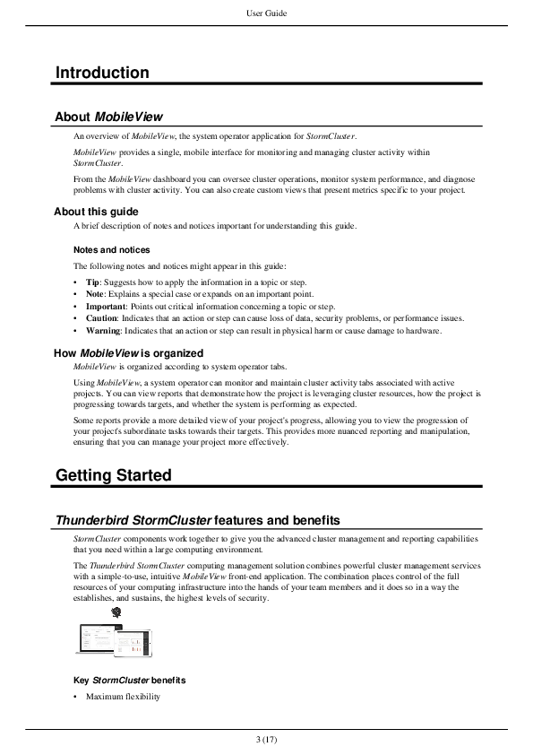
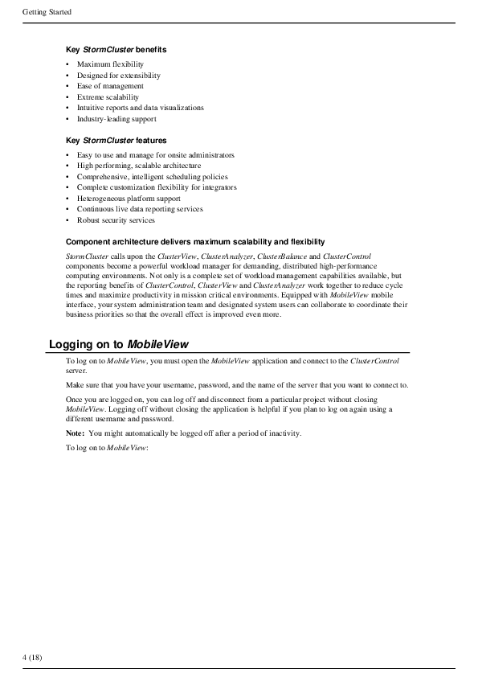
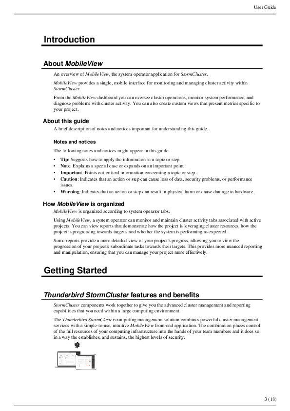
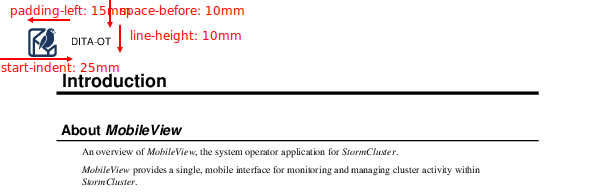

Header and footer
The content key in header or footer can be used to add text to running header or footer content. Content can include static text, or reference variables using curly braces.
The following variable fields are currently supported:
{title}: Map title{chapter-or-part-or-appendix}: Map chapter, part, or appendix number and title{chapter}: Map chapter number and title{chapter-title}: Map chapter title{chapter-number}: Map chapter number{part}: Map part number and title{part-title}: Map part title{part-number}: Map part number{appendix}: Map appendix number and title{appendix-title}: Map appendix title{appendix-number}: Map appendix number{folio}: Current page number{folio-with-total}: Current page number with total number of pages{page-number}: Current page number{page-count}: Total number of pages{year}: Current year
header:
content: '{title} — {chapter}'
border-bottom: solid 1pt blackHeader and footer size and alignment
To adjust the placement of page headers and footers, define the Page settings and use the extent and display-align keys.
page:
size: A4
# The body content starts 30 mm from top of page edge.
top: 30mm
outside: 20mm
# The body content ends 30 mm from bottom of page edge.
bottom: 30mm
inside: 20mm
header:
content: '{title}'
# The header starts directly from top of page edge and is 20 mm high.
extent: 20mm
# The header starts 20 mm from start/left of page edge
start-indent: 20mm
# The header content is vertically aligned to bottom of header.
display-align: after
footer:
content: '{folio-with-total}'
# The footer starts directly from bottom of page edge and is 20 mm high.
extent: 20mm
# The footer starts 20 mm from start/left of page edge
start-indent: 20mm
# The footer content is vertically aligned to top of footer.
display-align: beforeIf extent is not set, the value defaults to page top for header and page bottom for footer.
Simple header and footer
The same headers and footers can be used on all pages.
header:
content: '{title}'
start-indent: 10mm
end-indent: 10mm
border-bottom: solid 1pt black
text-align: center
footer:
content: '{folio-with-total}'
start-indent: 10mm
end-indent: 10mm
border-top: solid 1pt black
text-align: center
Duplex header and footer
To define separate headers or footers for recto (right) and verso (left) pages, use the odd and even keys.
# Generate duplex header and footer
mirror-page-margins: true
header:
start-indent: 10mm
end-indent: 10mm
padding-after: 6pt
border-bottom: solid 1pt black
odd:
content: '{title}'
# On odd/right/recto pages, horizontally align content to end/right side.
text-align: end
even:
content: '{chapter}'
# On even/left/verso pages, horizontally align content to start/left side.
text-align: start
footer:
start-indent: 10mm
end-indent: 10mm
padding-after: 6pt
border-bottom: solid 1pt black
odd:
content: '{folio-with-total}'
text-align: end
even:
content: '{folio-with-total}'
text-align: start

Header image
To add an image to page headers, use the background-image key and adjust the placement via padding, space-before, start-indent, etc.
header:
content: 'DITA-OT'
# Text starts 25 mm from left page edge.
start-indent: 25mm
# Header starts 10 mm from top page edge.
space-before: 10mm
# Header height is 10 mm
line-height: 10mm
# Image left edge is 15 mm from left text edge (10 mm from left page edge)
padding-left: 15mm
text-align: start
font-family: Helvetica
dominant-baseline: middle
# 10 mm x 10 mm image
background-image: dita-ot-logo.svg
background-repeat: no-repeat